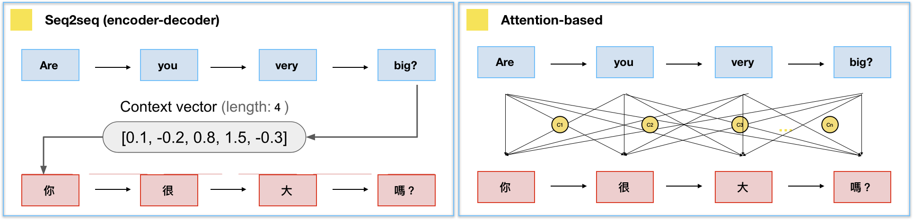

Attentional neural networks
Most figures and all videos in this chapter are taken from a series of great blog posts by Jay Alammar:
RNNs with Attention
The problem with the seq2seq architecture is that it compresses the complete input sentence into a single state vector.
For long sequences, the beginning of the sentence may not be present in the final state vector:
- Truncated BPTT, vanishing gradients.
- When predicting the last word, the beginning of the paragraph might not be necessary.
Consequence: there is not enough information in the state vector to start translating. A solution would be to concatenate the state vectors of all steps of the encoder and pass them to the decoder.
- Problem 1: it would make a lot of elements in the state vector of the decoder (which should be constant).
- Problem 2: the state vector of the decoder would depend on the length of the input sequence.
Attentional mechanisms (Bahdanau et al., 2016) let the decoder decide (by learning) which state vectors it needs to generate each word at each step.
The attentional context vector of the decoder \(A^\text{decoder}_t\) at time \(t\) is a weighted average of all state vectors \(C^\text{encoder}_i\) of the encoder.
\[A^\text{decoder}_t = \sum_{i=0}^T a_i \, C^\text{encoder}_i\]
The coefficients \(a_i\) are called the attention scores : how much attention is the decoder paying to each of the encoder’s state vectors? The attention scores \(a_i\) are computed as a softmax over the scores \(e_i\) (in order to sum to 1):
\[a_i = \frac{\exp e_i}{\sum_j \exp e_j} \Rightarrow A^\text{decoder}_t = \sum_{i=0}^T \frac{\exp e_i}{\sum_j \exp e_j} \, C^\text{encoder}_i\]
The score \(e_i\) is computed using:
- the previous output of the decoder \(\mathbf{h}^\text{decoder}_{t-1}\).
- the corresponding state vector \(C^\text{encoder}_i\) of the encoder at step \(i\).
- attentional weights \(W_a\).
\[e_i = \text{tanh}(W_a \, [\mathbf{h}^\text{decoder}_{t-1}; C^\text{encoder}_i])\]
Everything is differentiable, these attentional weights can be learned with BPTT.
The attentional context vector \(A^\text{decoder}_t\) is concatenated with the previous output \(\mathbf{h}^\text{decoder}_{t-1}\) and used as the next input \(\mathbf{x}^\text{decoder}_t\) of the decoder:
\[\mathbf{x}^\text{decoder}_t = [\mathbf{h}^\text{decoder}_{t-1} ; A^\text{decoder}_t]\]

The attention scores or alignment scores \(a_i\) are useful to interpret what happened. They show which words in the original sentence are the most important to generate the next word.

Attentional mechanisms are now central to NLP. The whole history of encoder states is passed to the decoder, which learns to decide which part is the most important using attention. This solves the bottleneck of seq2seq architectures, at the cost of much more operations. They require to use fixed-length sequences (generally 50 words).

Google Neural Machine Translation (GNMT (Wu et al., 2016)) uses an attentional recurrent NN, with bidirectional GRUs, 8 recurrent layers on 8 GPUs for both the encoder and decoder.